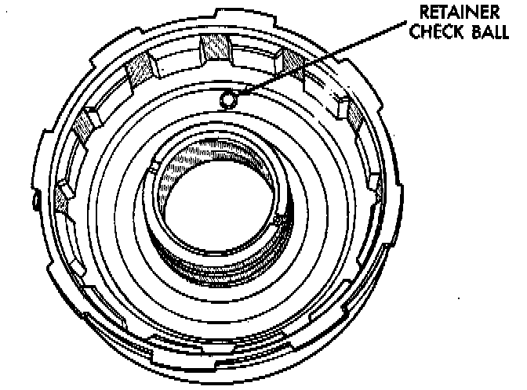
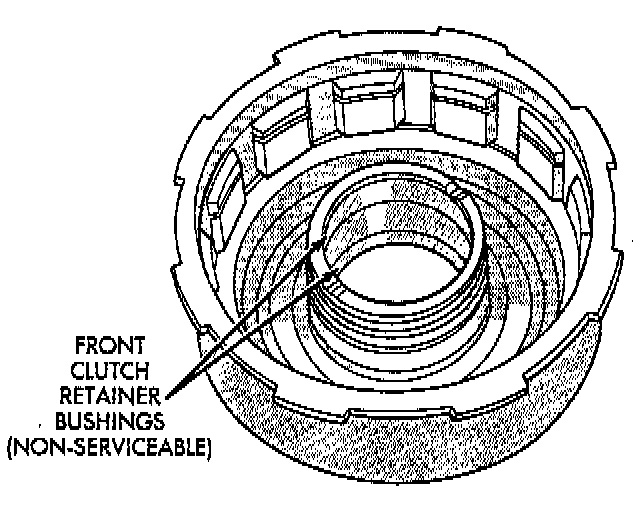

Front Clutch
Clean the front clutch components in solvent and dry them with compressed air only. Do not use rags or shop towels to dry any of the clutch parts. Lint from such materials will adhere to the component surfaces and could restrict or block fluid passages after assembly.Replace the clutch discs if warped, worn, scored, burned or charred, or if the facing is flaking off. Replace the steel plates if heavily scored, warped, or broken. Be sure the driving lugs on the plates are in good condition. The lugs must not be bent, cracked or damaged in any way.
Replace the clutch spring and spring retainer if either is distorted, warped or broken.
Check the lug grooves in the clutch retainer. The steel plates should slide freely in the slots. Replace the retainer if the grooves are worn or damaged.

Check action of the check ball in the retainer. The ball must move freely and not stick.

NOTE: Inspect the clutch retainer bushings carefully. The retainer bushings are NOT serviceable. It will be necessary to replace the retainer if either bushing is scored, or worn.
Inspect the piston and retainer seal surfaces for nicks or scratches. Minor scratches can be removed with crocus cloth. However, replace the piston and/or retainer if the seal surfaces are seriously scored.